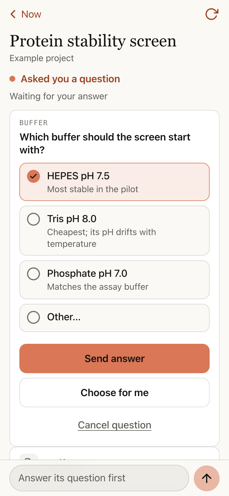
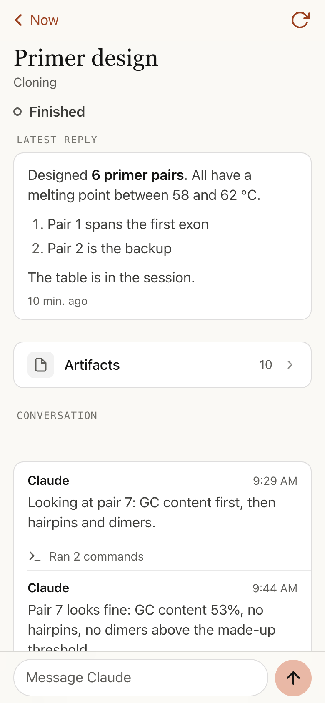
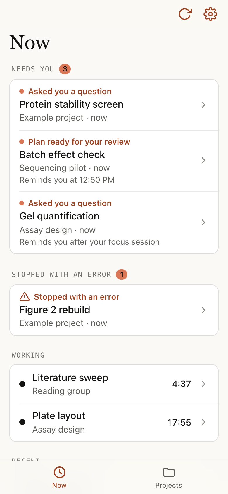
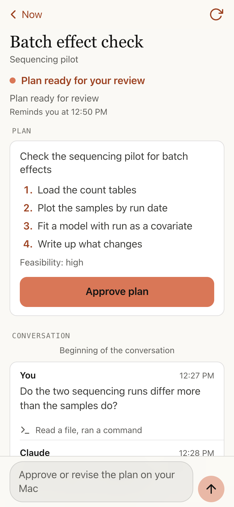
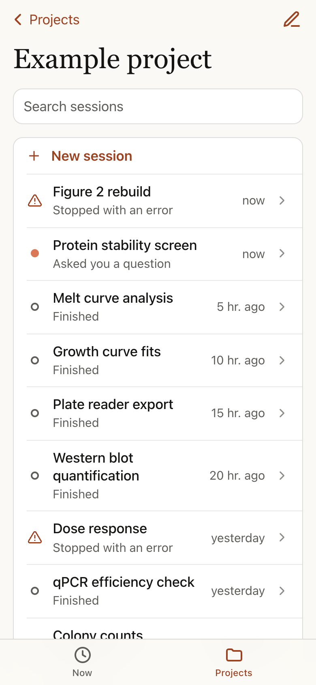
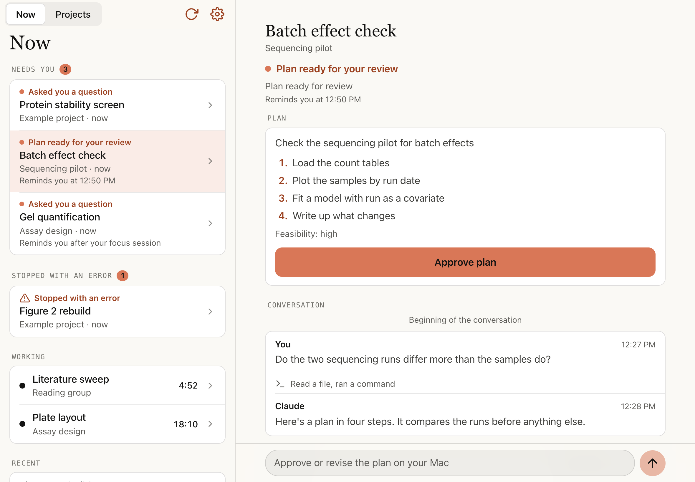
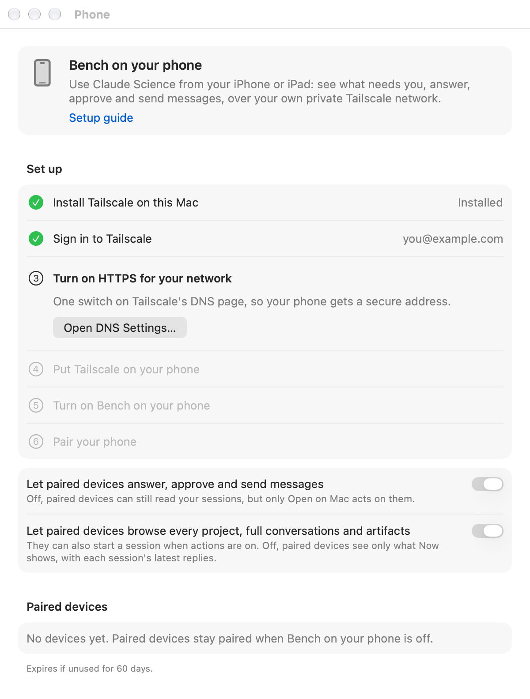

Claude Science, when you're away from your Mac.
See what needs you, answer a session's question, approve its plan or send it a message from your iPhone or iPad. Capsid serves the interface to paired devices through your Tailscale network. Optional notifications use Apple’s push service; Claude Science remains its own online service.


What you can do from your phone

See what needs you
What's waiting on you, what stopped, what's working and what finished lately, with your plan's usage.

Answer and approve
Answer a question, review a permission request, or approve a plan. Capsid checks that the plan has not changed on your Mac first.
Read and reply
Read a reply as it appears, look through the conversation and its files, send a message or add a photo.

Every project
All your projects and their sessions, with search, and a new session in any of them.
And on iPad, side by side

Notifications, if you want them
When a session needs you, stops with an error or finishes. By default only while you're away from your Mac, and without session names. They're encrypted so only your device can read them.
Private by design
Only devices you pair can get in, each with its own sign-in you can remove. Your paired devices can receive the conversations and files you allow. Two switches control acting and browsing.
Set it up in six steps
Open Capsid → Settings → Phone. It walks you through each step and ticks it off by itself as you go.
-
Install Tailscale on this Mac.
Install Tailscale on your Mac and phone. It links your own devices into a private network.
Download Tailscale for Mac -
Sign in to Tailscale.
Remember which sign-in you used (Google, Apple, GitHub…): your phone must use the same one.
-
Turn on HTTPS for your network.
One switch on Tailscale's DNS page, under HTTPS Certificates, so your phone gets a secure address.
Open Tailscale's DNS page -
Put Tailscale on your phone.
Install it from the App Store and sign in with the same account. Capsid ticks this step when it sees your phone.
Tailscale on the App Store -
Turn on Capsid on your phone.
One switch in Capsid. It shows the private address it's serving at.
-
Pair your phone.
Scan the QR code, add the page to your Home Screen, open it from there and type the 6-digit code. Done.
